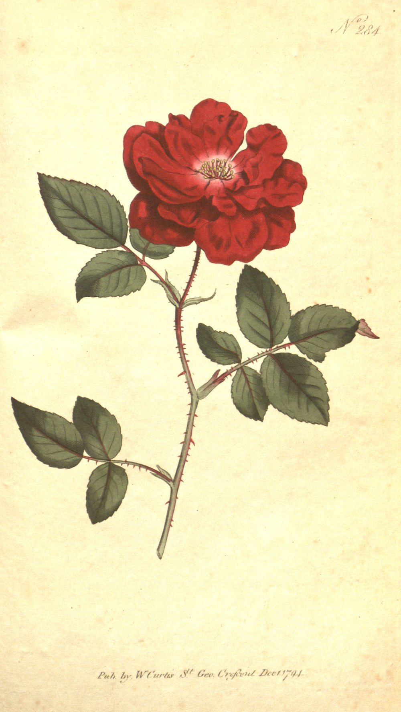

I am blind without curious, loving eyes.
I am blind without curious, loving eyes.
Luriana Lurilee, Charles Isaac Elton, 1899.
First, please enjoy this hand-coloured engraving of a China Rose and a little poem I found in Virginia Woolf's To The Lighthouse. This stanza is my favorite piece to read on both slow and fast days.
Currently, I am a PhD student at Georgia Tech, advised by Prof. Moin Qureshi in the Future Architecture and Systems Lab. Previously, I was a Research Fellow at Microsoft for a little short of 2 years.
I engage in systems for ML and computer architecture research.

I wonder if it seems to you
Luriana Lurilee
That all the lives we ever lived
And all the lives to be,
Are full of trees and waving leaves,
Luriana Lurilee.
' | remove: '
' | strip }}
Email: rsanovar3@gatech.edu
LinkedIn: linkedin.com/in/rya-sanovar
Website: ryasanovar.com
The best way to reach me is email.